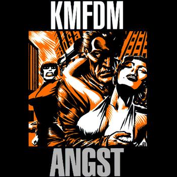
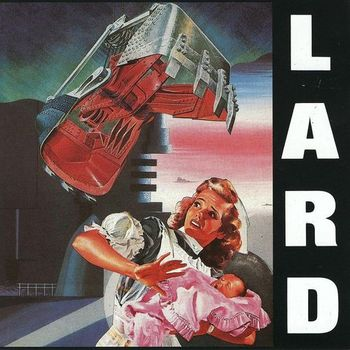
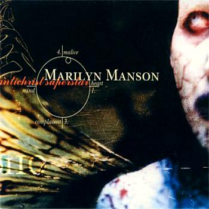
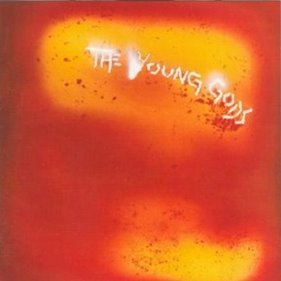
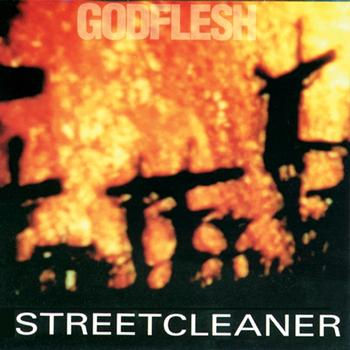
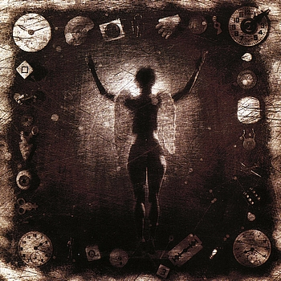
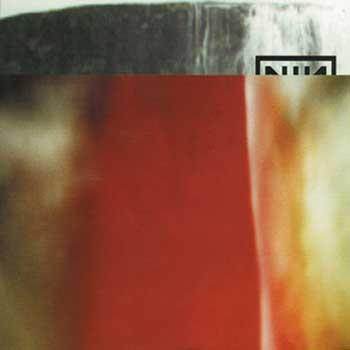
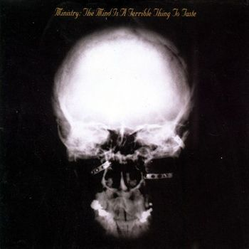
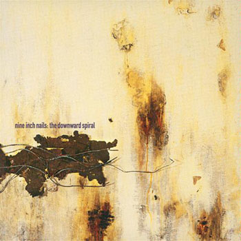

Y con esta última entrega se cierra la lista. Tenéis la posibilidad de escuchar las canciones que aparecen en cada una de las entregas a través de dos listas, una de Spotify y otra en Grooveshark. La primera, debido a las restricciones de la plataforma no tiene 30 temas sino 25.
10. KMFDM – Angst (1993)

Es difícil escoger un disco entre toda la discografía de KMFDM. Probablemente no hayan parido absolutas obras maestras, pero su regularidad les permitía mantener un nivel que otras bandas perdían rápidamente. Aún así, Angst es uno de esos trabajos dónde todo parece conjurarse para funcionar a un nivel superior: el sonido tan bombástico como potente y personal de la banda capitaneada por Konietzko, su particular sentido del humor y una capacidad a prueba de bombas para hacerte mover las caderas al ritmo de sus consignas. No es perfecto, pero casi, casi.
09. Lard – The Last Temptation Of Reid (1990)

Que el hardcore de los 80 fue un elemento clave del primerizo rock industrial es algo que se nota escuchando The Land Of Rape And Honey. Que al mismo Al Jourgensen un día se le encendiera la lucecita y montara esta colaboración con Jello Biafra (además de otra con Ian McKaye, dicho sea de paso) fue una de sus consecuencias ¿Qué puede haber más divertido que uno de los padres del rock industrial formando tándem con uno de los popes del hardcore? NADA. The Last Temptation of Reid es como una ráfaga disparada al aire desde un Kalashnikov en un día de celebraciones en Kabul, un ejercicio de frenético y esquizofrénico hardcore-punk-industrial que no te da respiro, salpicado de arengas de cariz social (cómo no) casi tan ácidas como la sangre de Alien.
08. Marilyn Manson – Antichrist Superstar (1996)

Marilyn Manson, el Reverendo. Un personaje tan polémico como necesario en su momento. ¿Qué hubiera sido de él de no haberse cruzado con Trent Reznor por el camino? Ni lo sé, ni me importa. Ese encuentro fue clave para que el alter ego de Brian Warner explotara, y pasara de ser una joven y prometedora figura a convertirse la peor pesadilla de la sociedad norteamericana de aquellos años. Antichrist Superstar es ambicioso, místico, retorcido y malvado. Un discazo sin paliativos.
07. The Young Gods – L’eau Rouge (1987)

¿Qué tendrá Suiza que ha dado a luz en sus fronteras a dos grupos tan innovadores en su momento como The Young Gods o Celtic Frost? Cuando el género todavía estaba en pañales ahí estaban Los Pequeños Dioses con su collage de samplers de guitarras y otros instrumentos abriendo una ventana al futuro del rock. Un futuro que ellos hicieron suyo porque nadie fue capaz de imitarles ni de coger el testigo. L’Eau Rouge es una obra maestra no sólo del rock industrial, sino de la década en la que vio la luz.
06. Godflesh – Streetcleaner (1989)

Justin Broadrick tenía mojo. Era algo que se podía entrever en The Fall Of Because o en Head Of David, pero creo que pocos se imaginaban un debut como el de Godflesh, considerado la biblia del Metal Industrial. Sucio y abrasivo, los riffs de guitarra que pueblan Streetcleaner son como frotar los genitales contra el asfalto de una carretera comarcal en pleno mes de agosto.
05. Ministry – Psalm 69 (The way to succeed and the way to suck eggs) (1992)

Tras The Mind Is A Terrible Thing To Taste, Ministry se lanzaron al vacío y abrazaron un sonido mucho más pesado y más denso. La entrada de Mike Scaccia como miembro oficial de la banda fue el detonante de ese viraje hacia terrenos más emparentados con el metal más pesado que con el espíritu hardcore de sus predecesores. ¿El resultado? Su mayor éxito comercial hasta la fecha y una pléyade de imitadores durante los años posteriores. Rammstein probablemente le deba tanto al riff de Just One Fix como a Die Krupps y Laibach el resto de su equipaje.
04. Killing Joke – Pandemonium (1994)
El debut de Killing Joke en 1981 se puede considerar como uno de los discos en los que posteriormente se inspiraría el rock industrial como género. En 1994 ya contaban con nueve referencias discográficas a sus espaldas, pero las huestes de Jaz Coleman se sacaron el miembro grabando un disco del mismo género que ellos mismos ayudaron a cimentar. Y no un disco cualquiera, no. Pandemonium era una hostia en toda regla para todos los advenedizos que a mediados de los 90 buscaban hacerse un sitio entre Nine Inch Nails o Ministry. Un disco maravilloso y misterioso como las pirámides egipcias en las que se inspiraba para forjar parte de su sonido.
03. Nine Inch Nails – The Fragile (1999)

Cinco años de espera para ver al sucesor de The Downward Spiral. Cinco. ¿Y qué hizo Trent Reznor? Cambiarle la cara a Nine Inch Nails publicando un disco doble dónde todo suena barroco y grandilocuente, y dónde se abandona en parte el nihilismo de sus predecesores. Cambiarlo todo para no cambiar nada, porque Nine Inch Nails siguen sonando a Nine Inch Nails y no es difícil establecer puentes entre The Downward Spiral y The Fragile. Un trabajo que, sí, es irregular (como suelen ser casi todos los discos dobles), pero que es el cénit compositivo de una de las personalidades clave del rock industrial, y también una de las más importantes de los últimos 30 años.
02. Ministry – The Mind Is A Terrible Thing To Taste (1989)

Es cierto que The Land Of Rape and Honey fue el precursor original, pero es en este disco dónde Ministry liman las aristas y se sueltan del todo de esa herencia proveniente de Twitch que aún arrastraban. Maravilloso, infeccioso y enfermizo. Ritmos hardcore, un genial uso de los samplers y algunos de los riffs definitivos del género. So What? es probablemente la canción que mejor definía a los Ministry de aquellos años y, además, una de las mejores que ha salido nunca del rock industrial.
01. Nine Inch Nails – The Downward Spiral (1994)

Sin lugar a dudas, el disco cúspide del género, pero también uno de los mejores discos de la década de los 90. Tras su publicación nada volvería a sonar con la misma fuerza, intensidad y originalidad. Nada. Ni sus miles de imitadores, ni el propio Trent Reznor, consiguieron ni conseguirán igualar el resultado. Ni falta que hace: las leyendas son inimitables.
Apoyános